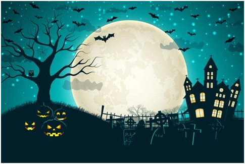

Quando falamos do Halloween muitos já pensam em filmes séries ou personagens de terror
isso por conta do filme “Halloween - A Noite do Terror” do ano de 1978, com isso as decorações deste tão famoso feriado nos Estados Unidos são todas de caveiras os fantasmas ou algo que se remeta ao terror
A maioria das tradições de Halloween tem origem nos antigos festivais celtas chamados Samhain, que marcava a chegada do inverno.
seu nome vem da expressão em inglês “All Hallow’s Eve” (Véspera de Todos os Santos), pois é comemorado um dia antes do feriado de 01 de novembro, e é muito comum em países de língua anglo-saxônica, nos Estados Unidos, qQuando chega o Halloween, eles começam a enfeitar suas casas e bairros, as lojas ficam cheias de fantasias, decorações e doces. No dia 31 todas as crianças se vestem com a fantasia de sua escolha e saem pelos bairros batendo nas portas das casas dizendo “Trick or treating”.

Halloween no Brasil
Por influência estadunidense, o Halloween também é comemorado no Brasil no dia 31 de outubro, mas a festa não possui o mesmo significado e valor cultural dos países da América do norte.
Grande parte da tradição de Halloween no Brasil é influenciada por cursos de idioma que promovem a data como forma de inserir os alunos na cultura dos países de língua inglesa.
No Brasil, o Halloween é marcado principalmente por festas à fantasia e por decorações em bares, lanchonetes e outros estabelecimentos, que adotam a temática de monstros, vampiros, bruxas, etc.